Eine Schaukel, ein Uhrenpendel und die Zinken einer Stimmgabel sehen sehr verschieden aus. Trotzdem folgt ihre Bewegung demselben Grundmuster.
Ein schwingungsfähiger Körper bewegt sich aus einer stabilen Ruhelage heraus. Eine rücktreibende Kraft bremst ihn, kehrt seine Bewegungsrichtung um und beschleunigt ihn wieder zur Ruhelage. Dort endet die Bewegung nicht: Wegen seiner Trägheit bewegt sich der Körper über die Ruhelage hinaus.
Dieses Wechselspiel aus Rückstellkraft und Trägheit wiederholt sich. Genau daran erkennst du einen Schwingungsvorgang.
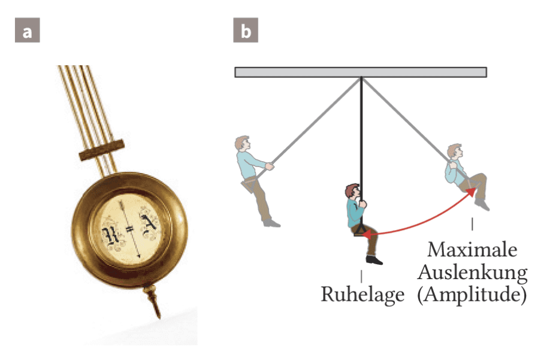
Eine mechanische Schwingung ist eine zeitlich wiederkehrende Bewegung um eine stabile Gleichgewichtslage. Ohne Rückstellkraft gibt es keine Schwingung.
Ruhelage, Auslenkung, Amplitude, Periodendauer, Frequenz, harmonische Beschreibung, Federpendel und Energieumwandlung.
Lineare Rückstellkraft ausführlich untersuchen, Parameterabhängigkeiten verknüpfen, Phasenbeziehungen vertiefen sowie DGL-Ansätze und Resonanzmodelle einordnen.
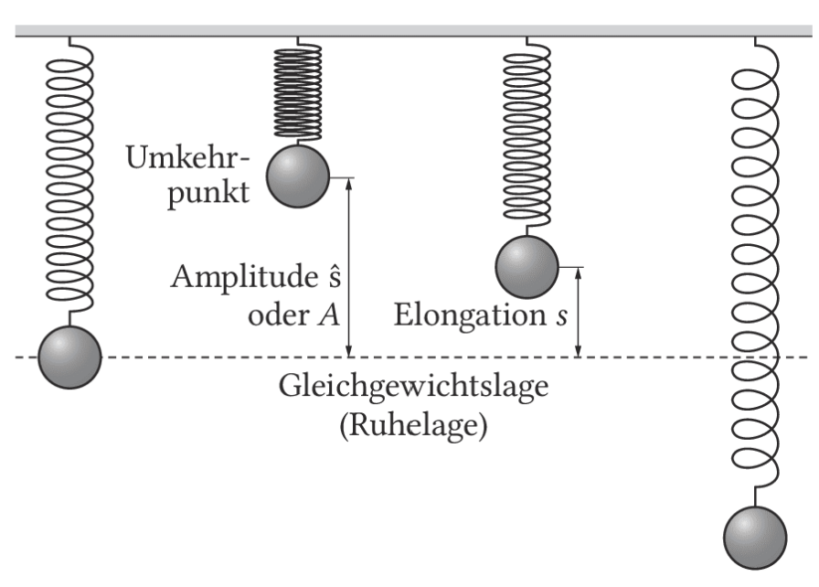
Die Auslenkung oder Elongation $s(t)$ gibt den gerichteten Abstand von der Ruhelage zu einem bestimmten Zeitpunkt an. Oberhalb und unterhalb der Ruhelage verwendet man unterschiedliche Vorzeichen.
Die Amplitude $A=\hat s$ ist die maximale Auslenkung. Die Periodendauer $T$ ist die Zeit für einen vollständigen Schwingungsdurchlauf. Die Frequenz $f$ zählt die vollständigen Schwingungen pro Sekunde.
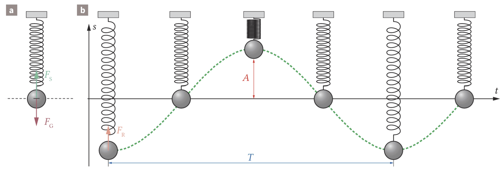
Ergibt das $s$-$t$-Diagramm eine Sinus- oder Kosinuskurve, heißt die Schwingung harmonisch. Eine freie ungedämpfte Schwingung würde ohne Energieverlust unbegrenzt weiterlaufen. Reale Schwingungen verlieren jedoch Energie durch Reibung und Schallabgabe; ihre Amplitude nimmt ab. Sie sind gedämpft.
Wird einem System von außen regelmäßig Energie zugeführt, spricht man von einer erzwungenen Schwingung. Eine Stimmgabel bestimmt ihren Rhythmus nach dem Anschlagen selbst. Eine Lautsprechermembran wird dagegen durch den angeschlossenen Generator zu dessen Frequenz gezwungen.
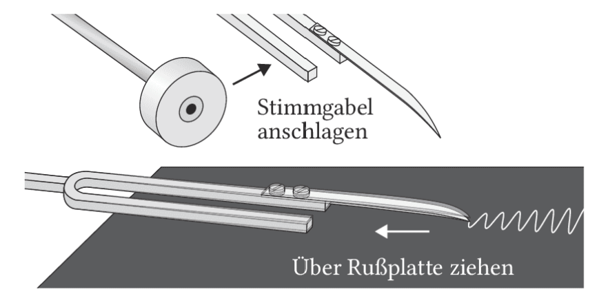
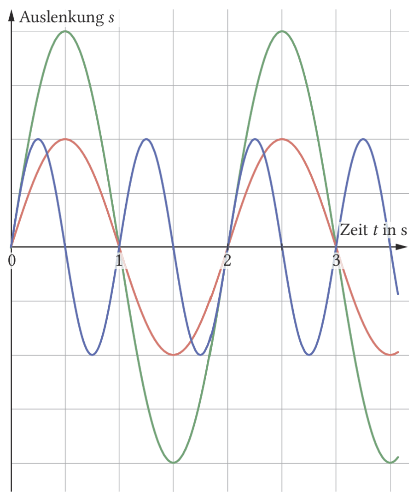
Startet der Schwinger bei $t=0$ in der Ruhelage und bewegt sich zunächst in positive Richtung, passt die Sinusform. Beim Start am positiven Umkehrpunkt passt die Kosinusform.
Die Anfangsphase $\varphi_0$ legt fest, an welcher Stelle der Schwingung die Zeitmessung beginnt.
Durch Ableiten des Zeitgesetzes erhältst du Geschwindigkeit und Beschleunigung. In der Ruhelage ist der Geschwindigkeitsbetrag maximal; an den Umkehrpunkten ist er null. Die Beschleunigung ist stets entgegengesetzt zur Auslenkung gerichtet.
Amplitude und Periodendauer direkt aus dem Diagramm ablesbar sind, die Frequenz aus $f=1/T$ folgt und eine harmonische Schwingung durch Sinus- oder Kosinusfunktionen beschrieben wird.
Nenne drei weitere Schwingungsvorgänge. Gib jeweils an, was schwingt, wo die Ruhelage liegt und wodurch die Bewegung gedämpft wird.
Eine Schaukel benötigt für fünf vollständige Schwingungen $16\,\mathrm{s}$. Berechne Periodendauer und Frequenz. Stelle anschließend für die Amplitude $2{,}5\,\mathrm{m}$ ein mögliches Zeitgesetz auf, wenn die Bewegung am positiven Umkehrpunkt beginnt.
Bestimme für jeden Graphen Amplitude, Periodendauer und Frequenz. Beachte die unterschiedlichen Einheiten an den Achsen. Begründe beim blauen Graphen, wie du trotz der unvollständig sichtbaren Periode vorgehst.
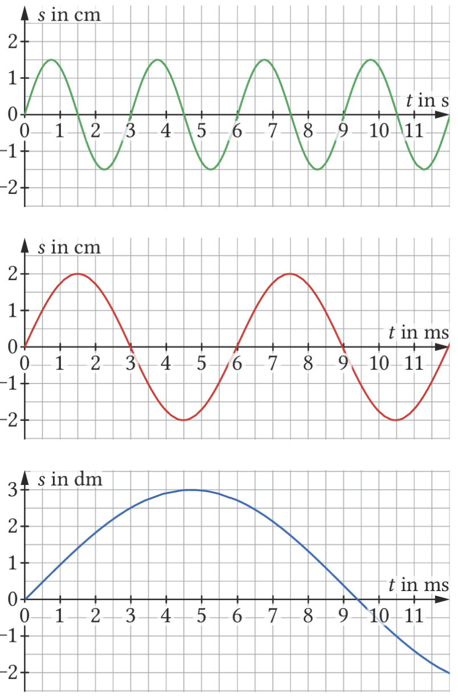
Vergleiche den mechanischen Schwingungsschreiber der Stimmgabel mit einer elektronischen Aufzeichnung durch Sensor, Messwerterfassung und Computer. Gehe auf Messgröße, Zeitmessung, Vorteil und mögliche Fehlerquelle ein.
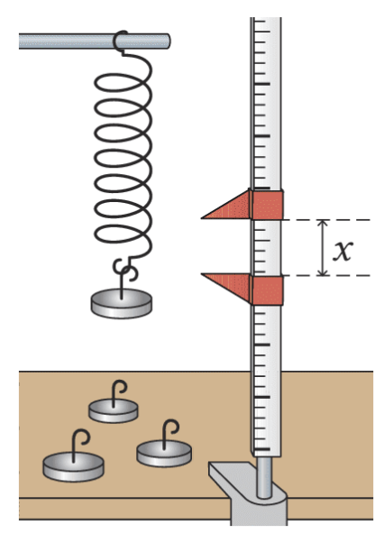
Hängst du verschiedene Massestücke an eine Stahlfeder, wirkt im ruhenden Zustand die Federkraft der Gewichtskraft entgegen. Im linearen Bereich wächst die Federkraft proportional mit der Verlängerung.
Die Federkonstante $D$ beschreibt die Federhärte. Ein großer Wert bedeutet: Für dieselbe Verlängerung ist eine größere Kraft nötig.
| Messgröße | 1 | 2 | 3 | 4 | 5 |
|---|---|---|---|---|---|
| $F$ in cN | 0 | 100 | 200 | 300 | 400 |
| $x$ in cm | 0,0 | 5,1 | 10,1 | 15,2 | 20,0 |
| $F/x$ in N/m | – | 19,6 | 19,8 | 19,7 | 20,0 |
Der nahezu konstante Quotient bestätigt das lineare Kraftgesetz mit $D\approx20\,\mathrm{N/m}$. Das Gesetz gilt jedoch nur im elastischen linearen Bereich.
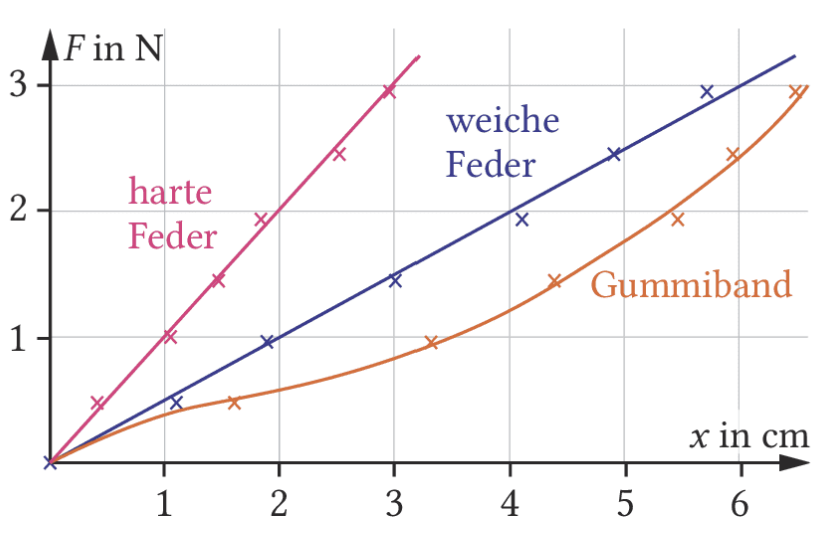
Beim vertikalen Federpendel legt die Gewichtskraft zunächst nur die Gleichgewichtslage fest. Dort heben sich Federkraft $F_0$ und Gewichtskraft $F_G$ auf. Wird die Masse um $s$ ausgelenkt, ändert sich die Federkraft um $D\,s$. Die resultierende Rückstellkraft zeigt stets zur Gleichgewichtslage.
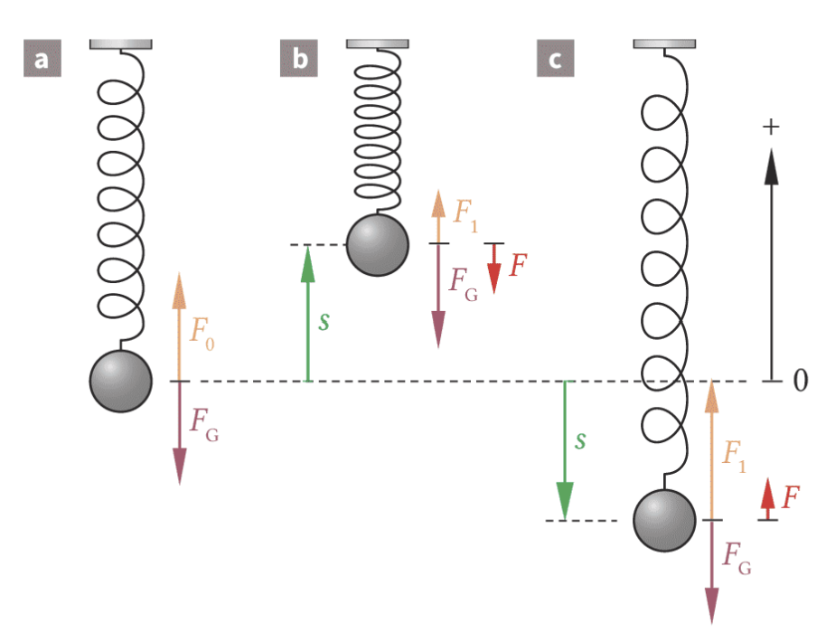
Das Minuszeichen ist keine zusätzliche Kraft. Es beschreibt die Richtung: $F_R$ und $s$ haben immer entgegengesetzte Vorzeichen. Eine Rückstellkraft proportional zur Auslenkung ist das Kennzeichen einer harmonischen Schwingung.
die Gleichgewichtslage beim vertikalen Federpendel durch die Gewichtskraft verschoben wird, für die Bewegung um diese Lage aber das lineare Rückstellgesetz $F_R=-Ds$ entscheidend ist.
Plane eine Messung, mit der du prüfst, bis zu welcher Belastung eine vorhandene Feder das hookesche Gesetz erfüllt. Lege unabhängige, abhängige und konstant zu haltende Größen fest und beschreibe ein geeignetes Diagramm.
Nun wird nicht nur beschrieben, dass ein Federpendel schwingt, sondern wovon seine Periodendauer abhängt. In jedem Teilversuch veränderst du genau eine Größe und hältst alle anderen möglichst konstant.
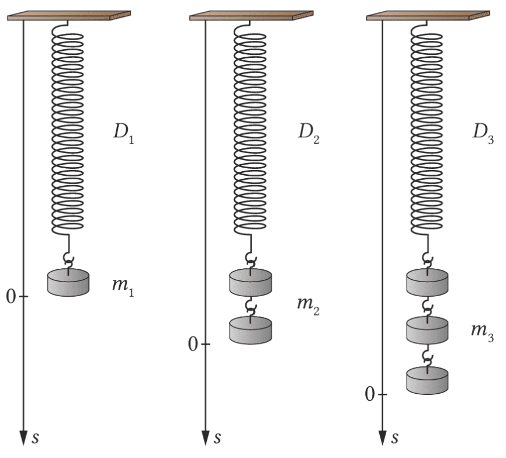
Für $m=0{,}15\,\mathrm{kg}$ und $D=9\,\mathrm{N/m}$ wird nur die Ausgangsauslenkung verändert.
| $A$ in m | 0,03 | 0,04 | 0,05 | 0,06 | 0,07 |
|---|---|---|---|---|---|
| $T$ in s | 0,75 | 0,73 | 0,77 | 0,73 | 0,76 |
Die Messwerte streuen ohne erkennbaren Trend. Im Gültigkeitsbereich des linearen Kraftgesetzes ist $T$ unabhängig von $A$.
Nun bleiben $D=9\,\mathrm{N/m}$ und die Amplitude annähernd konstant.
| $m$ in kg | 0,050 | 0,10 | 0,15 | 0,20 | 0,25 |
|---|---|---|---|---|---|
| $T$ in s | 0,52 | 0,72 | 0,88 | 1,00 | 1,12 |
| $T/\sqrt m$ in s/√kg | 2,33 | 2,28 | 2,27 | 2,24 | 2,24 |
Der Quotient $T/\sqrt m$ ist näherungsweise konstant. Daraus folgt $T\sim\sqrt m$. Eine größere Masse schwingt langsamer.
Bei gleicher Masse und gleicher Amplitude werden unterschiedlich harte Federn untersucht. Je größer $D$, desto stärker ist bei gleicher Auslenkung die Rückstellkraft und desto kürzer wird die Periodendauer. Die Auswertung ergibt $T\sim1/\sqrt D$.
$T$ hängt nicht von der Amplitude ab, solange das lineare Kraftgesetz gilt und die Dämpfung klein ist.
Berechne die Frequenz. Reibung sowie die Massen von Feder und Rolle werden vernachlässigt. Begründe außerdem, warum der Körper harmonisch schwingt.
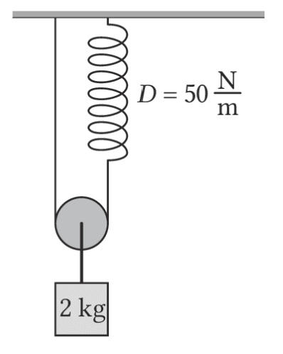
Ein Astronaut sitzt auf einem $10\,\mathrm{kg}$ schweren Stuhl zwischen zwei Federn. Die gesamte Richtgröße beträgt $D=840\,\mathrm{N/m}$. Fünf Schwingungen dauern $10{,}0\,\mathrm{s}$. Berechne die Masse des Astronauten und stelle bei $\hat s=0{,}50\,\mathrm{m}$ ein $s$-$t$-Gesetz für den Start am positiven Umkehrpunkt auf.
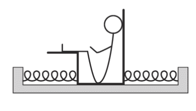
Bezogen auf die Gleichgewichtslage wechselt die Energie beim idealen Federpendel zwischen Bewegungsenergie und potenzieller Energie der Schwingung. Am Umkehrpunkt ist $v=0$; in der Gleichgewichtslage ist der Geschwindigkeitsbetrag maximal.
Bei einer realen Schwingung wird mechanische Energie durch Reibung in innere Energie umgewandelt. Deshalb nimmt die Amplitude ab.
Das Feder-Masse-Pendel ist nur ein Beispiel für eine harmonische Schwingung. Entscheidend ist nicht die Bauform, sondern ein gemeinsames Kraftgesetz: Ist die Rückstellkraft proportional zur Auslenkung und entgegengesetzt gerichtet, gilt $F_R=-D^*s$. Dann kann dieselbe mathematische Beschreibung auf sehr unterschiedliche Systeme übertragen werden.
Du beschreibst die Rückstellwirkung und untersuchst qualitativ, wovon die Periodendauer abhängt. Die ausführliche Herleitung der Richtgröße und anspruchsvolle Transferaufgaben sind als LF-Vertiefung markiert.
Wird ein Fadenpendel ausgelenkt, bewegt sich der Pendelkörper auf einem Kreisbogen. Die Gewichtskraft $F_G=mg$ wird in eine Komponente entlang des Fadens und eine tangentiale Komponente zerlegt. Nur die tangentiale Komponente beschleunigt den Körper entlang seiner Bahn zurück zur Ruhelage.
Die Fadenkraft hält den Abstand zum Aufhängepunkt konstant. Sie verrichtet bei der idealisierten Pendelbewegung keine Arbeit, weil sie immer senkrecht zur momentanen Bewegungsrichtung steht.
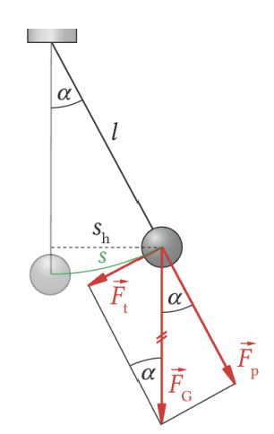
Für kleine Winkel im Bogenmaß gilt $\sin\alpha\approx\alpha\approx s/l$. Mit dem Vorzeichen für die rücktreibende Richtung folgt näherungsweise:
Für kleine Auslenkungen schwingt das Fadenpendel näherungsweise harmonisch. Seine Periodendauer hängt von der Pendellänge $l$ und dem Ortsfaktor $g$, aber nicht von der Pendelmasse ab.
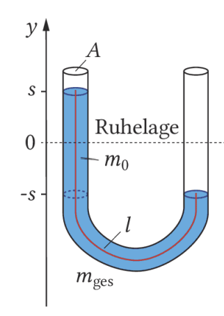
Das U-Rohr habe überall den Querschnitt $A$. Wird die Flüssigkeit aus ihrer Ruhelage verschoben, steht auf einer Seite eine zusätzliche Flüssigkeitssäule der Höhe $2s$. Ihre Gewichtskraft wirkt zurück zur Gleichgewichtslage.
Damit gilt wieder ein lineares Kraftgesetz mit $D^*=2\rho gA$. Die gesamte Flüssigkeit der Länge $l$ schwingt; ihre Masse ist $m=\rho Al$.
Dichte und Rohrquerschnitt kürzen sich. Sie beeinflussen in diesem idealisierten Modell die Periodendauer nicht.
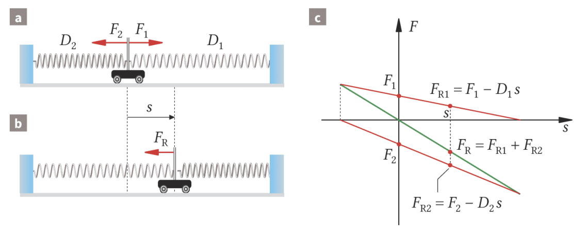
Ein Wagen der Masse $m$ ist zwischen Federn mit den Federkonstanten $D_1$ und $D_2$ eingespannt. In der Ruhelage heben sich die vorgespannten Federkräfte auf. Bei einer Auslenkung $s$ nach rechts nimmt die rücktreibende Wirkung beider Federn zusammen um $(D_1+D_2)s$ zu.
Wird die Anordnung ohne Reibung schräg gestellt, verschiebt die zusätzliche Hangabtriebskraft lediglich die Gleichgewichtslage. Die Periodendauer bleibt gleich, solange $D_1$, $D_2$ und $m$ unverändert bleiben.
Fadenpendel, U-Rohr und horizontaler Federschwinger trotz unterschiedlicher Ursachen harmonisch schwingen können. Entscheidend ist jeweils das lineare Rückstellgesetz $F_R=-D^*s$.
Baue ein möglichst langes Fadenpendel. Miss für mindestens fünf Längen jeweils die Zeit von zehn Perioden. Prüfe mit einem $T$-$\sqrt l$-Diagramm die Beziehung $T\sim\sqrt l$. Wiederhole anschließend zwei Messungen mit deutlich veränderter Masse und beurteile den Einfluss der Masse.
2. Das historische Foucault-Pendel im Panthéon hatte eine Fadenlänge von $67\,\mathrm{m}$. Berechne Periodendauer und Frequenz. 3. Bestimme die Länge eines Sekundenpendels mit $T=2{,}00\,\mathrm{s}$.
Bei diesen Aufgaben musst du das lineare Kraftgesetz, Energieerhaltung oder eine geeignete Richtgröße selbst erkennen.
Eine Riesenschaukel hat die Länge $5{,}0\,\mathrm{m}$. Berechne die Mindestgeschwindigkeit im tiefsten Punkt für einen vollständigen Überschlag. Unterscheide zwei Modelle: einen starren Pendelarm und ein Seil, das auch am höchsten Punkt gespannt bleiben muss.
5. Ein schwimmendes Reagenzglas mit $m=15\,\mathrm{g}$ und $A=2{,}0\,\mathrm{cm^2}$ wird um $s$ tiefer eingetaucht. Leite $m\ddot s=-\rho Ags$ her und berechne für Wasser die Periodendauer. Bestimme bei $\hat s=3{,}0\,\mathrm{cm}$ außerdem $v_\mathrm{max}$. 6. Eine Masse von $200\,\mathrm{g}$ dehnt eine Feder in der Ruhelage um $40\,\mathrm{cm}$. Sie wird weitere $10\,\mathrm{cm}$ ausgelenkt. Bestimme $D$, $T$, $f$, $\omega$ und $v_\mathrm{max}$.
Für $m=0{,}60\,\mathrm{kg}$, $D_1=9{,}50\,\mathrm{N/m}$ und $T=1{,}00\,\mathrm{s}$: Berechne $D_2$. Bestimme danach $T$ bei doppelter Masse und begründe die Periodendauer in der schrägen Anordnung.
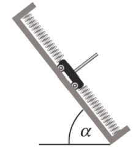
Eine gleichmäßig schwere Kette mit $l=60\,\mathrm{cm}$ und $m=600\,\mathrm{g}$ wird um $\Delta h=10\,\mathrm{cm}$ ausgelenkt. Zeige $F_R=-(2mg/l)\Delta h$, berechne $T$ und $v_\mathrm{max}$ und untersuche die Modellgrenze bei sehr großer Auslenkung.
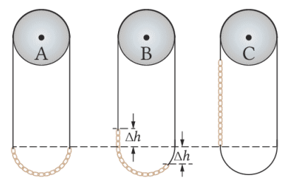
Die harmonische Bewegung wird mit $s(t)=\hat s\sin(\omega t+\varphi_0)$ oder einer gleichwertigen Kosinusfunktion beschrieben. Im Leistungsfach wird die mathematische Struktur ausführlicher begründet und auf weitere Systeme übertragen.
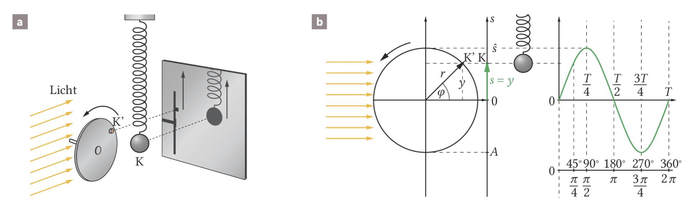
Ein Punkt $K'$ läuft gleichförmig auf einem Kreis mit Radius $r$. Seine Projektion auf die senkrechte Achse besitzt die Koordinate $y=r\sin\varphi$. Stimmt diese Projektion mit der Auslenkung des Federpendels überein, gilt $\hat s=r$ und $s=y$.
Die Phase beschreibt nicht nur einen Ort. Zwei gleiche Auslenkungen können zu unterschiedlichen Zuständen gehören, wenn die Bewegungsrichtungen verschieden sind. Ein vollständiger Zustand wird erst durch Auslenkung und Bewegungsrichtung eindeutig.
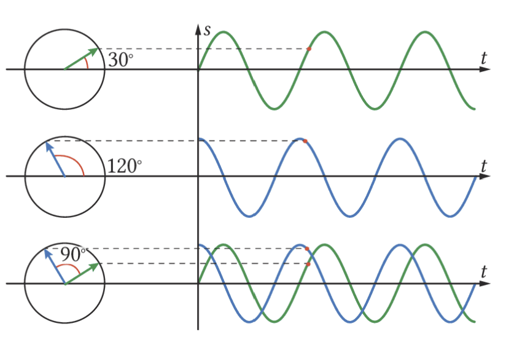
Erläutere mithilfe der Abbildung, was die Phase einer einzelnen Schwingung und die Phasendifferenz zweier Schwingungen bedeuten. Begründe, weshalb die Zeigerdarstellung den Vergleich erleichtert.
Aus dem linearen Kraftgesetz $F_R=-Ds$ und dem zweiten newtonschen Gesetz $F=m\ddot s$ folgt:
Die Funktion $s(t)=\hat s\sin(\omega t)$ kann als Lösung überprüft werden. Zweimaliges Ableiten liefert $\ddot s(t)=-\omega^2s(t)$. Einsetzen ergibt $\omega^2=D/m$ und damit $T=2\pi\sqrt{m/D}$.
Die formale Lösungsprüfung ist eine mathematische Vertiefung. Für den gemeinsamen Kern genügt es, die fertige Schwingungsgleichung sicher anzuwenden.
Skizziere beide Schwingungen über mindestens zwei Perioden. Markiere jeweils Amplitude, Periodendauer und den ersten positiven Umkehrpunkt.
Beim Fadenpendel ist die Rückstellwirkung nur für kleine Winkel näherungsweise linear. Dann gilt:
Bei einer erzwungenen Schwingung kann Resonanz auftreten, wenn Erregerfrequenz und Eigenfrequenz nahe beieinanderliegen. Dämpfung begrenzt die Amplitude. Überlagern sich zwei Schwingungen mit nahe beieinanderliegenden Frequenzen, entsteht eine Schwebung.
Eine harmonische Schwingung lässt sich nicht nur mit Kräften und Bewegungsgleichungen beschreiben. Die Energiebetrachtung zeigt besonders anschaulich, warum ein idealer Schwinger immer wieder zwischen Umkehrpunkt und Ruhelage wechselt.
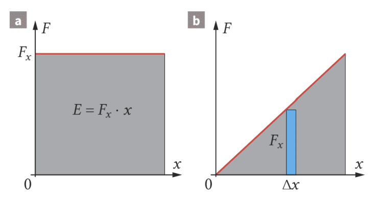
Bei konstanter Kraft gilt $E=Fx$. Beim Spannen einer Feder wächst die Kraft dagegen nach $F=Dx$. Für eine sehr kleine Verlängerung $\Delta x$ kann die Kraft als annähernd konstant behandelt werden. Die Summe aller schmalen Rechtecke nähert sich der Dreiecksfläche unter der Geraden.
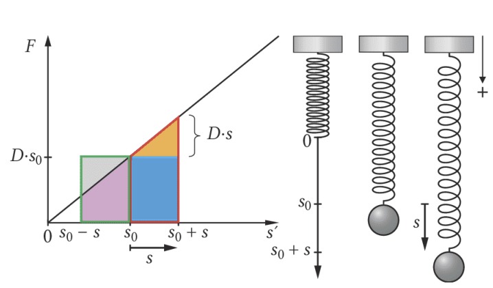
In der Gleichgewichtslage ist die Feder bereits durch die Gewichtskraft gedehnt. Wird die Masse von dort um $s$ ausgelenkt, ändern sich Spannenergie und Höhenenergie gleichzeitig. Ihre gemeinsame Änderung ist die Elongationsenergie:
Diese Energie hängt nur vom Betrag der Auslenkung ab. Sie ist deshalb am oberen und unteren Umkehrpunkt gleich groß.
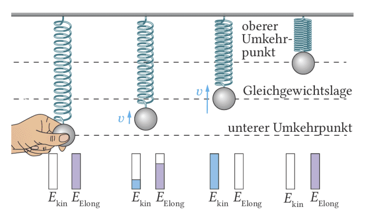
Ohne Reibung bleibt die Gesamtenergie konstant. Aus $D=m\omega^2$ folgt für den Durchgang durch die Gleichgewichtslage außerdem:
Elongations- und Bewegungsenergie sich periodisch ineinander umwandeln. Die Gesamtenergie ist proportional zu $\hat s^2$, die Maximalgeschwindigkeit dagegen proportional zu $\hat s$.
1. Vergleiche gesamte Spannenergie und Elongationsenergie für eine Auslenkung, die genauso groß ist wie die statische Dehnung $s_0$. 2. Erkläre, wie sich das Kraft-Weg-Diagramm ändert, wenn die angehängte Masse verdoppelt wird und anschließend wieder um denselben Betrag ausgelenkt wird.
Eine Feder speichert bei $5{,}0\,\mathrm{cm}$ Kompression $7{,}5\,\mathrm{J}$. Berechne die Federkonstante. Welche Geschwindigkeit könnte eine Kugel der Masse $0{,}20\,\mathrm{g}$ höchstens erreichen, wenn die gesamte Federenergie verlustfrei in Bewegungsenergie überginge? Bewerte anschließend die Modellannahme.
Hier verknüpfst du Diagrammauswertung, Ableitungen und Energie.
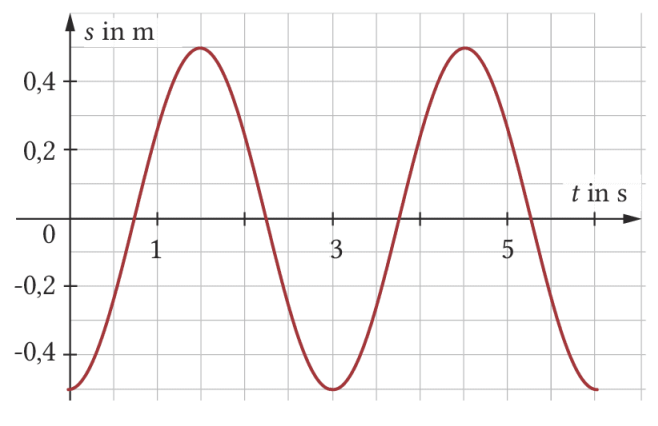
a) Lies die Periodendauer ab. b) Berechne die maximale Geschwindigkeit. c) Die Amplitude wird durch einen äußeren Eingriff um $50\,\%$ erhöht. Bestimme die neue Maximalgeschwindigkeit und den Faktor, um den die Gesamtenergie wächst.
Treffen Schallwellen verschiedener Instrumente am Trommelfell oder an einer Mikrofonmembran ein, führt das schwingende System nicht mehrere getrennte Bewegungen aus. Seine momentane Auslenkung ist die Summe aller Einzelauslenkungen. Dieses Superpositionsprinzip gilt, solange sich das System linear verhält.
Haben beide Einzelschwingungen dieselbe Frequenz, bleibt ihre Phasendifferenz $\varphi_0$ konstant. Die Summe ist wieder harmonisch und besitzt dieselbe Frequenz. Amplitude und Anfangsphase der resultierenden Schwingung hängen jedoch von beiden Amplituden und der Phasendifferenz ab.
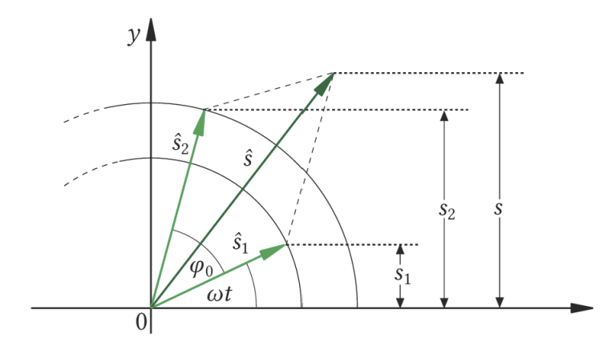
Die Zeiger werden wie Vektoren addiert. Mit dem Kosinussatz ergibt sich für die resultierende Amplitude:
Für $\varphi_0=0$ addieren sich die Amplituden vollständig. Für $\varphi_0=\pi$ wirken sie gegeneinander; bei gleichen Amplituden löschen sich die Schwingungen aus.
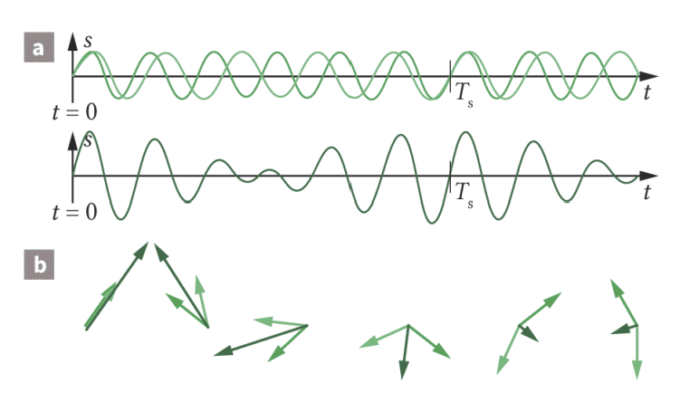
Bei zwei nahen Frequenzen ist die Summe nicht mehr harmonisch. Die Amplitude schwillt periodisch an und ab. Dieses hörbare Lauter-und-Leiser heißt Schwebung.
Zwei gleichfrequente harmonische Schwingungen ergeben wieder eine harmonische Schwingung. Zwei nahe, aber verschiedene Frequenzen erzeugen eine Schwebung mit der Differenzfrequenz.
Gegenüber einer Stimmgabel mit $440{,}0\,\mathrm{Hz}$ schwillt der Ton eines Generators in $5{,}0\,\mathrm{s}$ zehnmal an. Bestimme beide möglichen Frequenzen des Generators.
Zwei Schwingungen besitzen $f=50\,\mathrm{Hz}$, $\hat s_1=2{,}0\,\mathrm{cm}$, $\hat s_2=5{,}0\,\mathrm{cm}$ und $\varphi_0=\pi/3$. Ermittle Amplitude und Anfangsphase der resultierenden Schwingung.
Fertige zuerst ein maßstäbliches Zeigerdiagramm an. Kontrolliere die Amplitude anschließend mit dem Kosinussatz und bestimme die Phase des Summenzeigers.
In dieser Aufgabe führst du die gesamte Modellierungskette durch: Rückstellkraft bestimmen, Differenzialgleichung deuten, Periodendauer berechnen und ein Diagramm mit Ableitungsgrößen auswerten.
Die Herleitung der DGL und die zeitpunktgenaue Auswertung von $s(t)$, $v(t)$ und $a(t)$ sind eine Vertiefung für das Leistungsfach. Die qualitative Energie- und Diagrammdeutung ist auch im Basisfach sinnvoll.
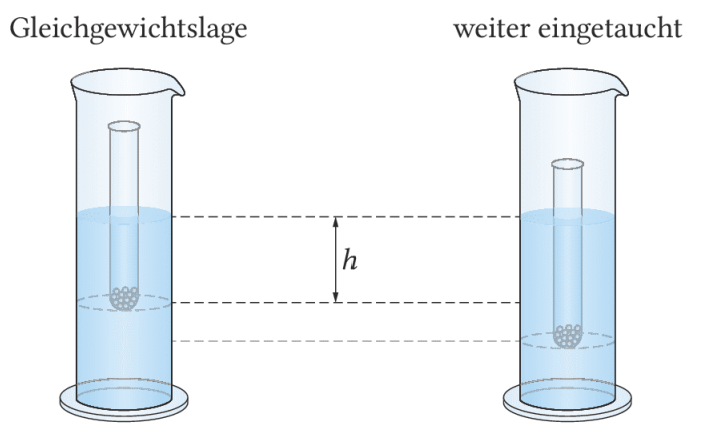
In der Gleichgewichtslage heben sich Gewichtskraft und Auftriebskraft auf. Für die folgende Rechnung zeigt die positive $s$-Richtung nach oben. Wird das Reagenzglas um den Betrag $|s|$ weiter eingetaucht, ist $s<0$ und der zusätzliche Auftrieb $\rho gA|s|$ zeigt in positive Richtung. Damit lautet die Rückstellkraft:
Mit $m=\rho Ah$ aus dem Gleichgewicht folgt die angegebene Form $T=2\pi\sqrt{h/g}$.
Ein Reagenzglas schwimmt mit der Eintauchtiefe $h=11{,}0\,\mathrm{cm}$. Es wird aus der Gleichgewichtslage um $4{,}0\,\mathrm{cm}$ nach unten ausgelenkt und bei $t=0$ losgelassen. Reibung wird vernachlässigt.
a) Berechne Periodendauer und Frequenz. b) Zeichne das $s$-$t$-Diagramm für zwei Perioden. c) Berechne maximale Geschwindigkeit und maximale Beschleunigung. d) Bestimme in $0\le t\le1\,\mathrm{s}$ alle Zeitpunkte maximaler Geschwindigkeits- und Beschleunigungsbeträge. e) Berechne $a(0{,}55\,\mathrm{s})$. f) Bestimme die Bewegungsrichtung bei $t=0{,}55\,\mathrm{s}$.
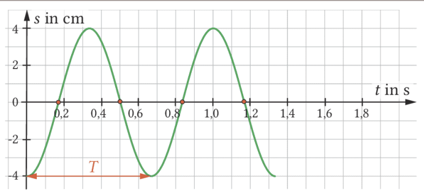
Diese Seite bündelt die Begriffe, Modelle und Formeln des gesamten Materials. Nutze sie als Lernlandkarte: Decke jeweils die rechte Spalte gedanklich ab und versuche, Gesetz und Bedeutung selbst zu formulieren.
Ein schwingungsfähiger Körper wird aus einer stabilen Gleichgewichtslage ausgelenkt. Dadurch entsteht eine Rückstellkraft, die zur Gleichgewichtslage zeigt. Sie bremst die Bewegung zum Umkehrpunkt hin ab und beschleunigt den Körper anschließend wieder zurück. In der Gleichgewichtslage ist die Rückstellkraft momentan null. Der Körper bewegt sich wegen seiner Trägheit trotzdem weiter und wird erst auf der anderen Seite erneut abgebremst.
Die Auslenkung $s(t)$ ist der gerichtete Abstand von der Gleichgewichtslage. Ihr größter Betrag heißt Amplitude $\hat s$. Die Periodendauer $T$ gibt an, nach welcher Zeit der Schwinger wieder denselben Ort und dieselbe Bewegungsrichtung besitzt. Die Frequenz $f$ zählt die vollständigen Perioden pro Sekunde.
Eine Periode ist nicht einfach die Zeit zwischen zwei Nulldurchgängen. Dort ist die Bewegungsrichtung jeweils verschieden. Sicher bestimmst du $T$ zwischen zwei aufeinanderfolgenden Maxima, zwei aufeinanderfolgenden Minima oder zwei Nulldurchgängen mit gleicher Bewegungsrichtung.
Eine Schwingung ist harmonisch, wenn ihr $s$-$t$-Diagramm sinusförmig verläuft. Physikalisch entsteht dieser Verlauf, wenn die Rückstellkraft proportional zur Auslenkung ist und stets in die entgegengesetzte Richtung zeigt. Der Faktor $D^*$ heißt allgemein Richtgröße des Schwingungssystems.
Das Minuszeichen beschreibt die Richtung: Für $s>0$ ist $F_R<0$, für $s<0$ ist $F_R>0$. Es bedeutet nicht, dass der Betrag der Kraft negativ wäre. Je weiter der Körper ausgelenkt ist, desto stärker wird er zur Ruhelage zurückbeschleunigt.
Eine mögliche mathematische Beschreibung lautet:
Die Anfangsphase $\varphi_0$ legt fest, an welcher Stelle der Bewegung die Zeitmessung beginnt. Startet der Schwinger in der Gleichgewichtslage in positive Richtung, eignet sich die Sinusform mit $\varphi_0=0$. Beim Start am positiven Umkehrpunkt ist eine Kosinusfunktion besonders einfach.
In der Gleichgewichtslage ist der Geschwindigkeitsbetrag maximal und die Beschleunigung null. An den Umkehrpunkten ist die Geschwindigkeit null, während der Beschleunigungsbetrag maximal ist.
Beim vertikalen Federpendel verschiebt die Gewichtskraft die Gleichgewichtslage. Für die Bewegung um diese Lage ist jedoch nur die Änderung der Federkraft entscheidend. Aus dem hookeschen Gesetz folgt $F_R=-Ds$. Eine größere Masse führt zu einer längeren Periodendauer; eine härtere Feder mit größerem $D$ führt zu einer kürzeren Periodendauer. Die Amplitude beeinflusst $T$ nicht, solange die Feder dem linearen Kraftgesetz gehorcht.
Beim Fadenpendel ist nur die tangentiale Komponente der Gewichtskraft für die Bewegung verantwortlich. Erst für kleine Winkel darf $\sin\alpha\approx\alpha\approx s/l$ gesetzt werden. Dann ist die Rückstellkraft näherungsweise proportional zur Auslenkung. Die Masse kürzt sich aus der Periodendauer heraus.
Beim U-Rohr entsteht bei einer Auslenkung $s$ ein Höhenunterschied $2s$ zwischen beiden Flüssigkeitsoberflächen. Die Gewichtskraft der überstehenden Flüssigkeitssäule wirkt zurück. Mit $m=\rho Al$ kürzen sich Dichte $\rho$ und Querschnitt $A$ aus der Periodendauer.
Beim horizontalen Federschwinger tragen beide Federn zur Rückstellwirkung bei. Deshalb addieren sich ihre Federkonstanten. Eine konstante zusätzliche Kraft, etwa die Hangabtriebskraft bei einer schrägen Anordnung, verschiebt nur die Gleichgewichtslage und ändert die Periodendauer nicht.
Beim Auslenken eines Federpendels wird dem System Elongationsenergie zugeführt. Sie entspricht der Dreiecksfläche unter dem linearen Kraft-Weg-Graphen. Während der Schwingung wird diese Energie fortlaufend in Bewegungsenergie und wieder zurück umgewandelt.
An den Umkehrpunkten gilt $v=0$: Dort liegt die Energie vollständig als Elongationsenergie vor. Beim Durchgang durch die Gleichgewichtslage gilt $s=0$: Dort ist die Bewegungsenergie maximal. Ohne Reibung bleibt ihre Summe konstant.
Die Gesamtenergie wächst quadratisch mit der Amplitude. Wird $\hat s$ verdoppelt, vervierfacht sich die Energie. Die Maximalgeschwindigkeit wächst dagegen linear mit der Amplitude und verdoppelt sich.
Die Phase beschreibt, an welcher Stelle einer Periode sich ein Schwinger befindet. Zur vollständigen Beschreibung reicht die Auslenkung allein nicht aus: Derselbe Wert von $s$ kann beim Hin- und beim Zurückschwingen auftreten. Die Zeigerdarstellung enthält zugleich Auslenkung und Bewegungszustand.
Überlagern sich zwei Schwingungen, addieren sich zu jedem Zeitpunkt ihre gerichteten Auslenkungen. Bei gleicher Frequenz bleibt die Phasendifferenz konstant und die Summe ist wieder eine harmonische Schwingung derselben Frequenz.
Bei gleicher Phase addieren sich die Amplituden. Bei einer Phasendifferenz von $\pi$ wirken sie gegeneinander und können sich bei gleichen Amplituden vollständig auslöschen. Unterscheiden sich die Frequenzen nur wenig, ändert sich ihre Phasendifferenz fortlaufend. Die resultierende Amplitude wird periodisch größer und kleiner: Es entsteht eine Schwebung.
| Bereich | Zentrale Aussage | Formel |
|---|---|---|
| Kenngrößen | Frequenz und Periodendauer sind Kehrwerte. | $f=1/T$ |
| Harmonische Schwingung | Die Auslenkung verläuft sinusförmig. | $s(t)=\hat s\sin(\omega t+\varphi_0)$ |
| Kreisfrequenz | Eine Periode entspricht dem Winkel $2\pi$. | $\omega=2\pi f=2\pi/T$ |
| Geschwindigkeit | In der Ruhelage ist der Betrag maximal. | $v_\mathrm{max}=\omega\hat s$ |
| Beschleunigung | Sie zeigt entgegengesetzt zur Auslenkung. | $a=-\omega^2s$ |
| Lineare Rückstellkraft | Sie kennzeichnet die harmonische Schwingung. | $F_R=-D^*s$ |
| Federpendel | Große Masse verlängert, große Federkonstante verkürzt $T$. | $T=2\pi\sqrt{m/D}$ |
| Fadenpendel | Gilt näherungsweise für kleine Winkel. | $T=2\pi\sqrt{l/g}$ |
| U-Rohr | Dichte und Querschnitt kürzen sich. | $T=2\pi\sqrt{l/(2g)}$ |
| Zwei Federn | Die Richtgrößen addieren sich. | $T=2\pi\sqrt{m/(D_1+D_2)}$ |
| Energie | Elongations- und Bewegungsenergie tauschen sich aus. | $E=\frac12Ds^2+\frac12mv^2$ |
| Schwebung | Nahe Frequenzen erzeugen eine wechselnde Amplitude. | $f_S=|f_2-f_1|$ |
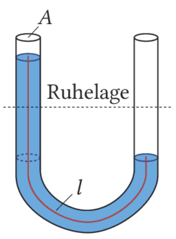
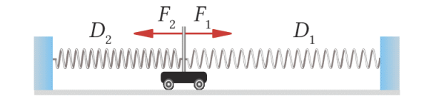
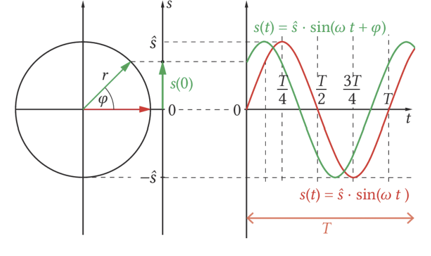
Wähle zwei der Systeme Federpendel, Fadenpendel, U-Rohr, horizontaler Federschwinger oder schwimmendes Reagenzglas. Erkläre für beide die Ruhelage, die Ursache der Rückstellkraft, die Richtgröße, die Abhängigkeiten der Periodendauer und eine Grenze des Modells. Schließe mit einem präzisen Vergleich.